选用肥美的秋刀鱼，用紫苏叶包裹后炸制，搭配清爽的梅肉。请直接品尝！与[白]甲州葡萄酒非常搭配！

秋季经典。香气浓郁的舞茸炸至酥脆，无论蘸盐还是天妇罗酱都美味可口！与[红]黑皮诺葡萄酒非常搭配！

炸过的无花果更添甜味，搭配融化的戈尔根朱勒奶酪，佐以香醋酱。请直接品尝！与[红]麝香贝利A葡萄酒非常搭配！

品味真鲷细腻的甜味与鲜美，享受柔嫩口感的拌生蛋黄酱。请慢慢品尝。
与[桃红]桃红起泡酒非常搭配！

自信推荐的烤牛肉，尽享肉香与美味。与[红]黑皮诺葡萄酒非常搭配！
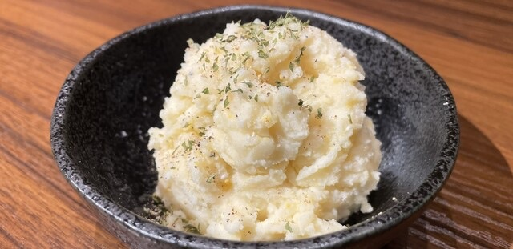
自制土豆沙拉，口感细腻，带有温和的甜味。无论是佐餐还是小食都很合适！

爽脆的山药配以芥末的独特香气，是天妇罗间隙的理想小菜！

白菜浅渍，爽脆口感与淡淡的甜味相得益彰。清爽的味道，适合料理间隙享用。
与[白]甲州葡萄酒非常搭配！

麝香葡萄的甜味、生火腿的咸香与芝士的浓郁完美融合。与起泡酒非常搭配！

冰爽甘甜的冷冻无花果与马苏里拉芝士，搭配生火腿。推荐与起泡酒一起享用！

应季秋刀鱼搭配番茄和洋葱，制成清爽的腌菜。与[白]长相思葡萄酒非常搭配！

大塩的招牌！尽享鲑鱼籽的浓郁鲜味与海苔天妇罗的酥脆口感。与起泡酒相得益彰。

人气之选。葱金枪鱼泥与脆爽的腌萝卜完美结合。与起泡酒相得益彰。

细腻的沙丁鱼天妇罗，佐以松露盐的丰富香气。请享受轻盈的白肉与香脆外衣。
可直接品尝
与[白]维欧尼葡萄酒非常搭配！

经典之选！享受弹牙口感与现炸香气。可蘸藻盐品尝！与桃红起泡酒非常搭配。
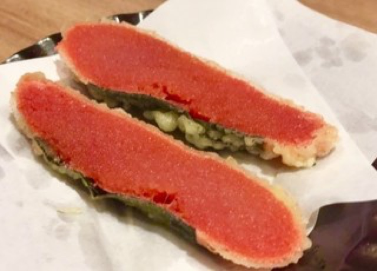
将明太子的浓郁鲜味包裹于酥脆外衣中。请直接品尝！与[白]雷司令葡萄酒非常搭配！

弹牙的口感与温和的甜味。无论蘸盐还是天妇罗酱都美味！与[白]维欧尼葡萄酒非常搭配！
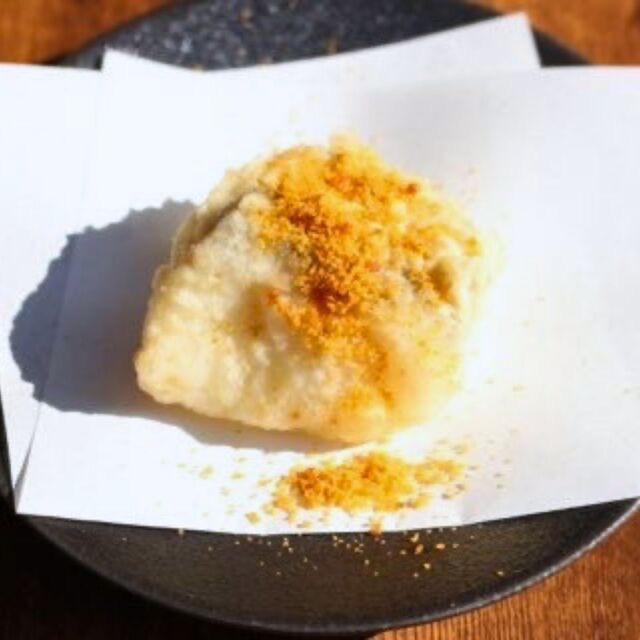
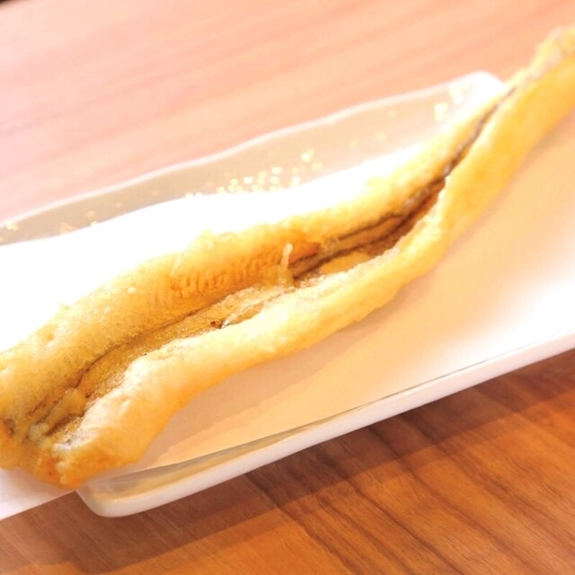
星鳗肉质松软，脂香细腻。可蘸藻盐或天妇罗酱享用！与[红]麝香·贝利A葡萄酒非常搭配！※图片为2份。

真鲷搭配柠檬皮的清新香气，绝佳组合。请直接品尝！推荐搭配桃红起泡酒！

炸制后洋葱的甜味和柔软口感尽显。无论是蘸盐还是天妇罗酱都很美味！与[红]赤霞珠葡萄酒非常搭配！

小火慢炸两小时，充分激发红薯的甜味。与[红]赤霞珠葡萄酒非常搭配！

人气之选！芦笋配帕尔玛奶酪，趁热享用最佳！与[白]长相思葡萄酒非常搭配！
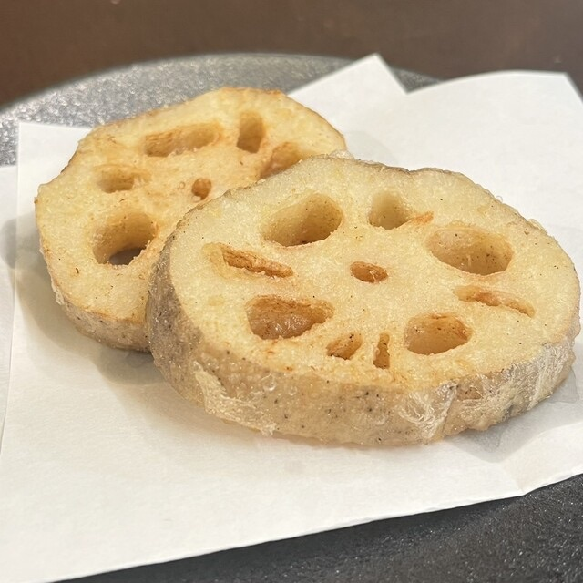
爽脆的口感与香气令人愉悦。可蘸盐或天妇罗酱享用！与[红]赤霞珠葡萄酒非常搭配！

新炸茄子与帕尔玛火腿的咸香完美融合。趁热享用！与[红]黑皮诺葡萄酒非常搭配！
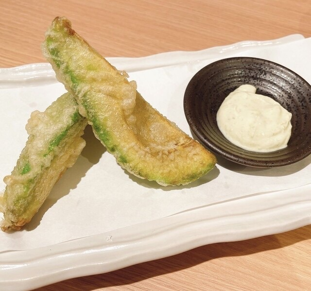
炸至柔滑的牛油果配芥末蛋黄酱，绝配。请与酱汁一起享用！与[白]霞多丽葡萄酒非常搭配！
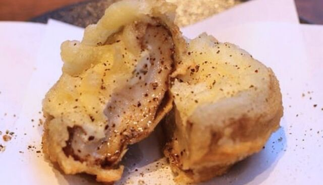
厚实香菇内填入蒜香芝士后炸制。趁热享用！与[红]赤霞珠葡萄酒非常搭配！

外酥内流心，蛋黄柔滑。蘸天妇罗酱，趁热享用！与[白]霞多丽葡萄酒非常搭配！
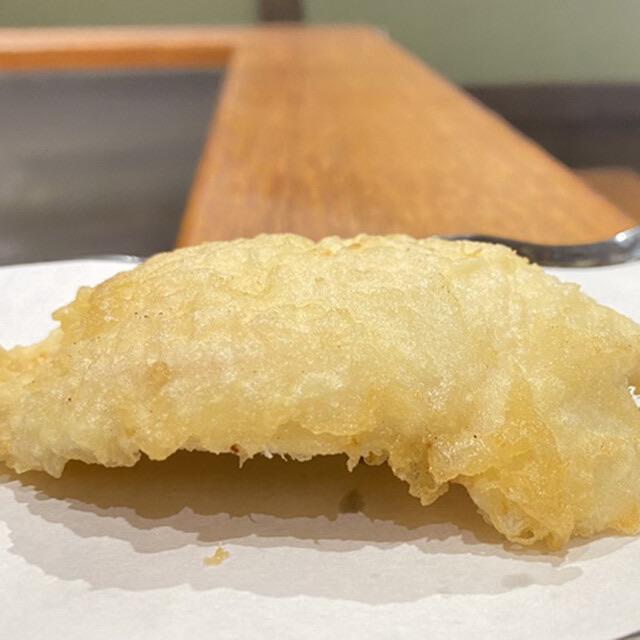
多汁鸡肉包裹香脆外衣。蘸天妇罗酱，趁热享用！与[红]黑皮诺葡萄酒非常搭配！
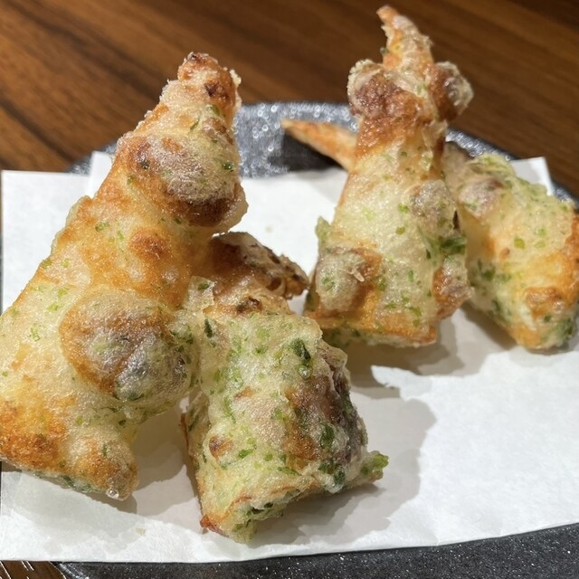
海味十足，大家都爱的竹轮天妇罗。可蘸盐或天妇罗酱享用！与[白]维欧尼葡萄酒非常搭配！

大阪名物！辣味与酸味令人上瘾的传统天妇罗。可蘸少许天妇罗酱享用！推荐搭配起泡酒！

鸭肉的浓郁鲜香被香脆外衣包裹。请直接品尝！与[红]黑皮诺葡萄酒非常搭配！
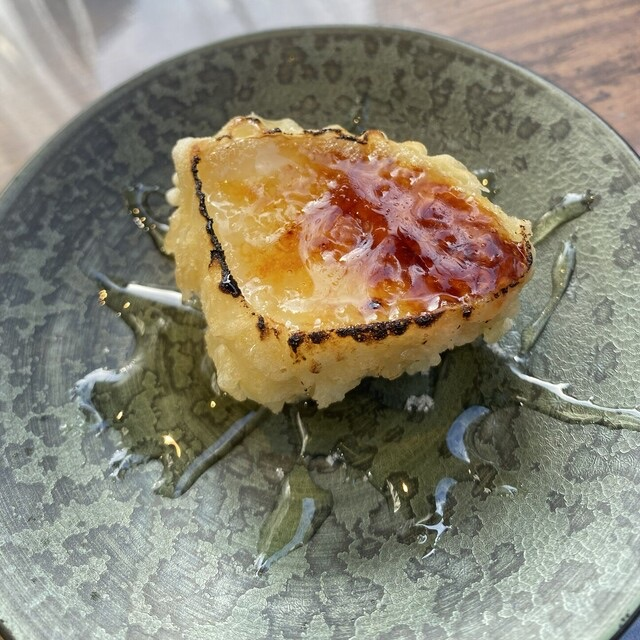
奢华卡门贝尔天妇罗，表面焦糖化，搭配蜂蜜趁热享用！与[白]霞多丽葡萄酒非常搭配！
温和甜味的米饭，衬托菜肴风味。可与天妇罗或其他美味自由搭配。

味噌香气浓郁，温暖人心的汤品。可与料理搭配，也适合作为餐后收尾。
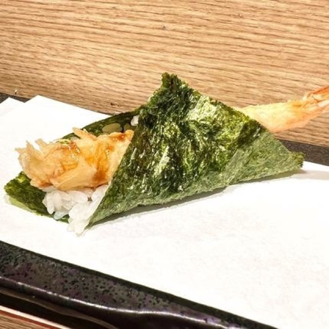
炸虾天妇罗与米饭、海苔卷制而成的收尾美味。搭配甜酱风味绝佳！

半熟蛋天妇罗盖在米饭上的收尾盖饭。请将蛋黄拌入浸满甜酱的米饭中享用！
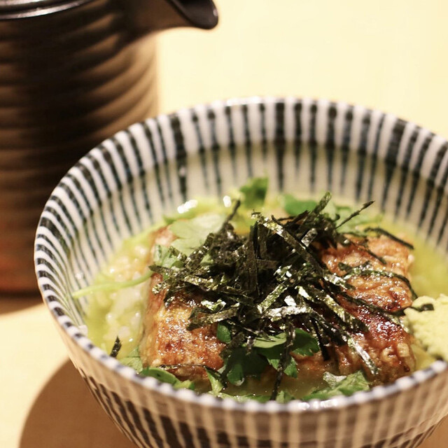
这是一道能同时品尝鲷鱼天妇罗鲜味与米饭的茶泡饭。请在感受天妇罗衣香气的同时，作为一餐的收尾享用。


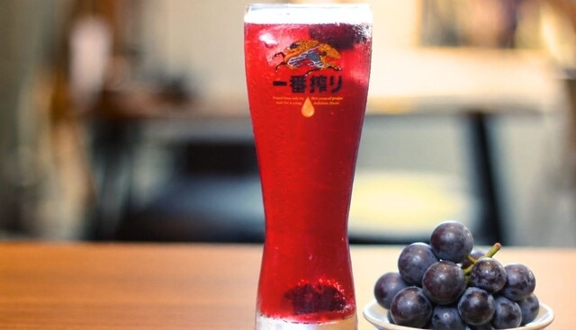
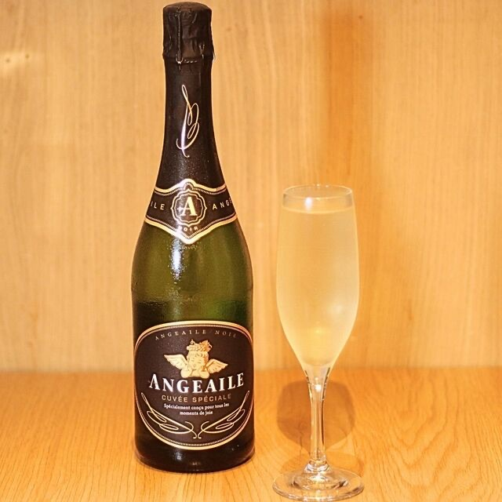
清爽干型，轻盈衬托天妇罗香气的气泡酒（西班牙）。
◎推荐搭配：鲑鱼籽法式小点、各类天妇罗

无论是蘸盐还是天妇罗酱都很搭，能提升虾和真鲷风味的百搭桃红（西班牙）。
◎推荐搭配：虾、真鲷～柠檬皮～
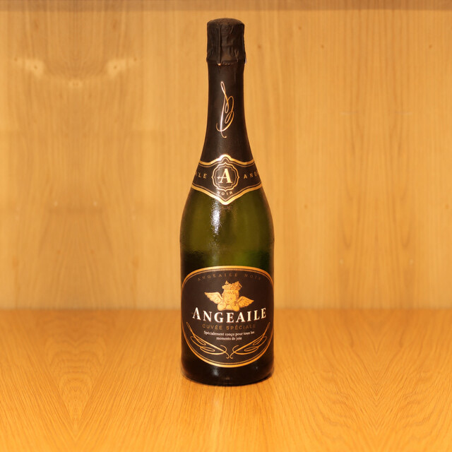
清爽干型，轻盈衬托天妇罗香气的气泡酒（西班牙）。
◎推荐搭配：鲑鱼籽法式小点、各类天妇罗

无论是蘸盐还是天妇罗酱都很搭，能提升虾和真鲷风味的百搭桃红（西班牙）。
◎推荐搭配：虾、真鲷～柠檬皮～
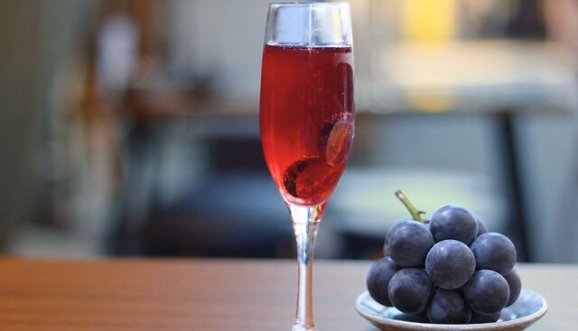
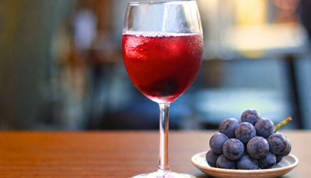

清爽干型，带有青苹果和热带水果香气的白葡萄酒（智利）。
◎推荐搭配：卡门贝尔布蕾、各类天妇罗

新鲜活泼的酸度与高雅馥郁香气的白葡萄酒（法国）。
◎推荐搭配：虾、鱿鱼、海鲜

草本香气与均衡丰富口感的白葡萄酒（法国）。
◎推荐搭配：芦笋～帕尔玛干酪～

果香清新，微甜柔和口感的白葡萄酒（德国）。
◎推荐搭配：麝香葡萄生火腿芝士、明太子

清爽干型，带有青苹果和热带水果香气的白葡萄酒（智利）。
◎推荐搭配：卡门贝尔布蕾、各类天妇罗

新鲜活泼的酸度与高雅馥郁香气的白葡萄酒（法国）。
◎推荐搭配：虾、鱿鱼、海鲜

草本香气与均衡丰富口感的白葡萄酒（法国）。
◎推荐搭配：芦笋～帕尔玛干酪～

果香清新，微甜柔和口感的白葡萄酒（德国）。
◎推荐搭配：麝香葡萄生火腿芝士、明太子

柑橘系清新香气，能与和食完美融合的白葡萄酒（日本）。
◎推荐搭配：秋刀鱼、万愿寺辣椒、三种刺身拼盘

柑橘系清新香气，能与和食完美融合的白葡萄酒（日本）。
◎推荐搭配：秋刀鱼、万愿寺辣椒、三种刺身拼盘

黑加仑丰富香气与深厚醇厚口感的红葡萄酒（法国）。
◎推荐搭配：红薯、香菇～蒜香芝士～

草莓与樱桃香气，口感轻盈柔和的红葡萄酒（智利）。
◎推荐搭配：鸭肉、鸡天妇罗、茄子～帕尔玛火腿～

黑加仑丰富香气与深厚醇厚口感的红葡萄酒（法国）。
◎推荐搭配：红薯、香菇～蒜香芝士～

草莓与樱桃香气，口感轻盈柔和的红葡萄酒（智利）。
◎推荐搭配：鸭肉、鸡天妇罗、茄子～帕尔玛火腿～

野草莓的清香与莓果的果味轻柔交融的桃红葡萄酒（日本）。
◎推荐搭配：炸星鳗天妇罗

野草莓的清香与莓果的果味轻柔交融的桃红葡萄酒（日本）。
◎推荐搭配：炸星鳗天妇罗


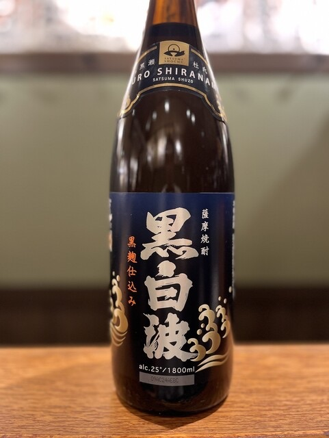
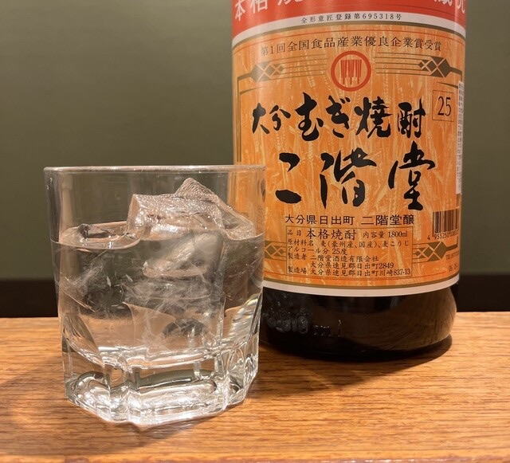

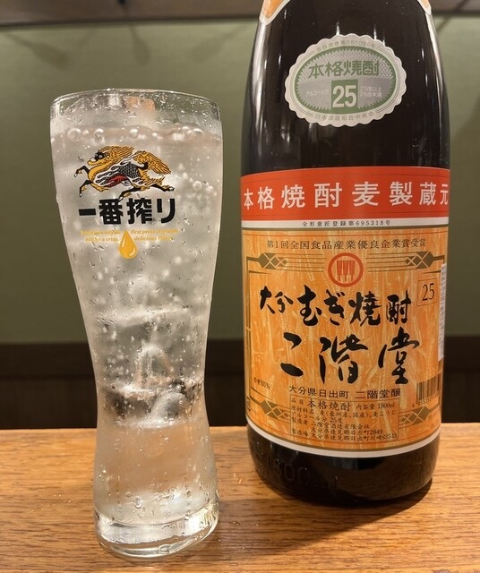
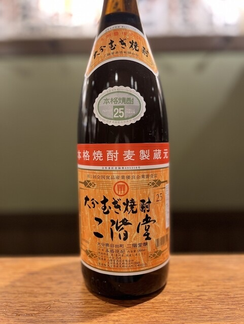


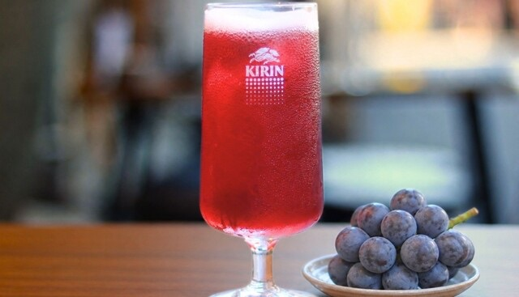